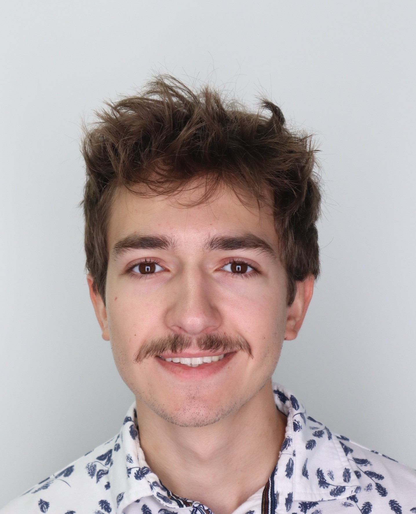
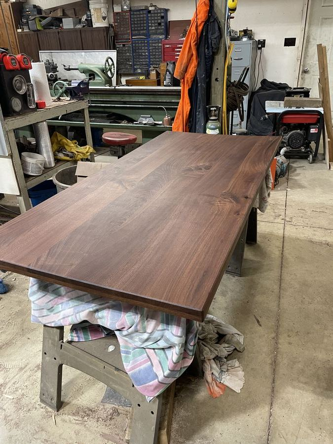
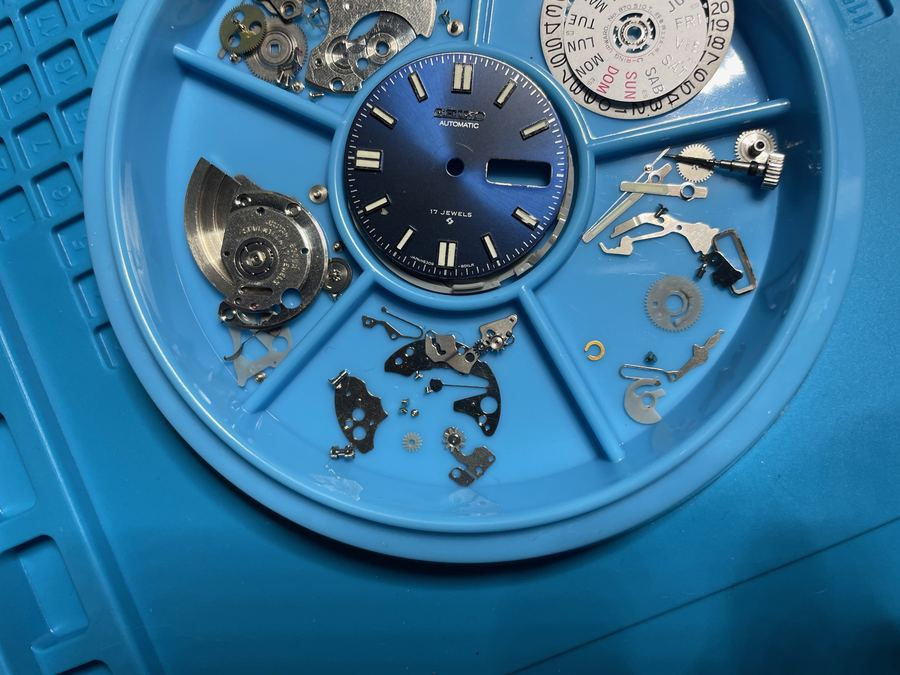
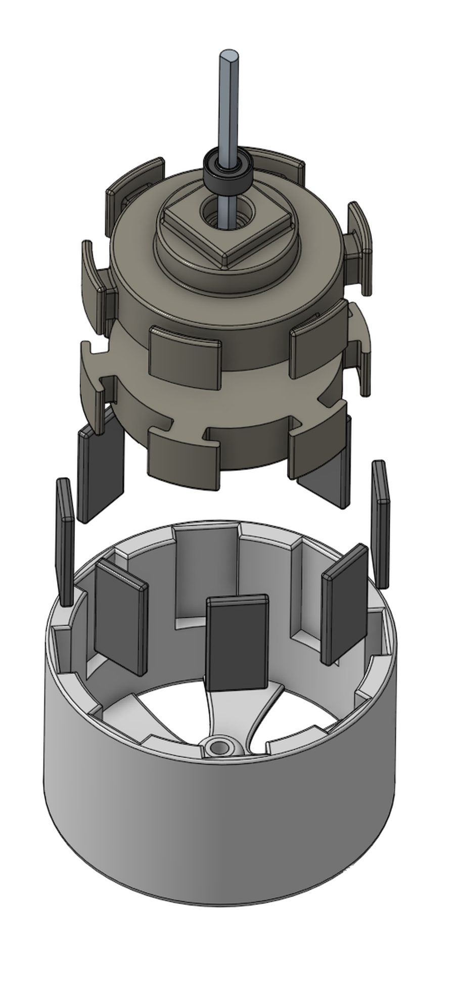
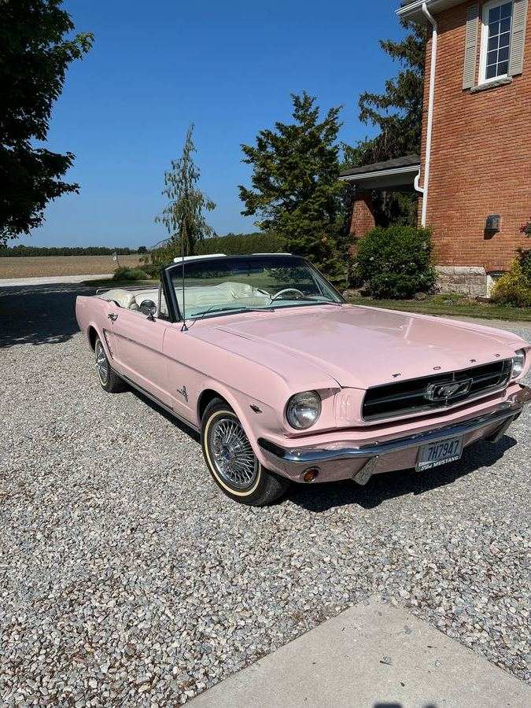
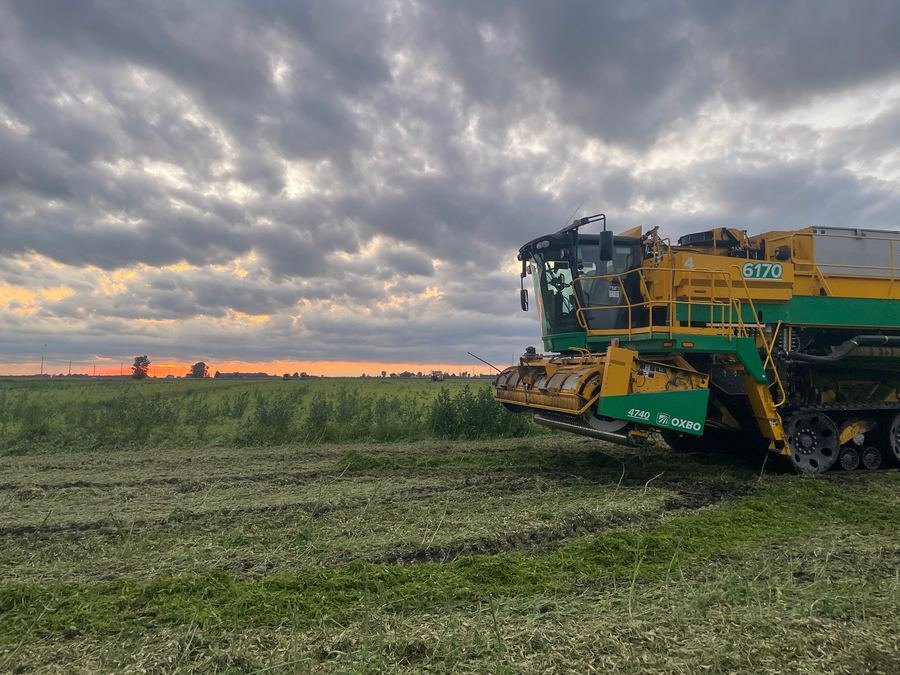
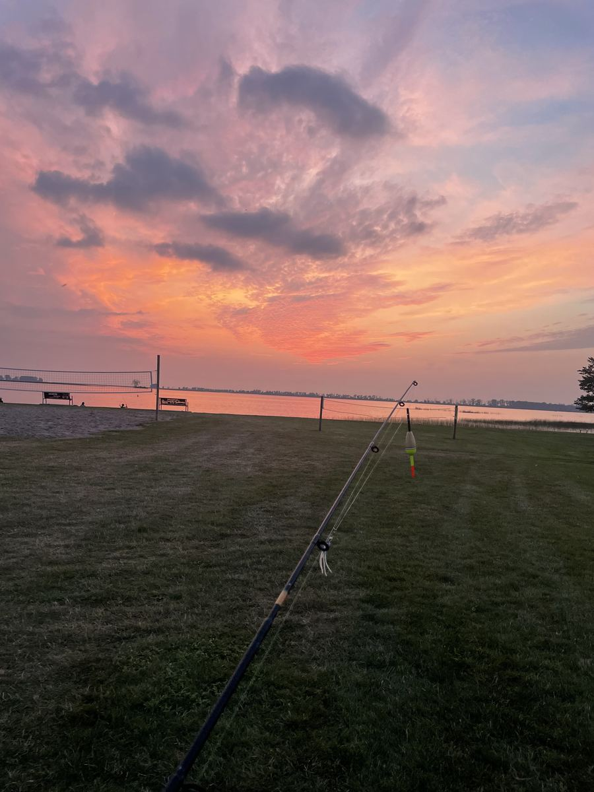

Engineering · Building · Making
Griffin Laprise
Aspiring electrical engineer from London, Canada, third-year survivor, and robotics and automation enthusiast. Grew up on a farm, which probably explains why I like fixing things and taking on so many projects. My skill set includes circuit design, embedded systems, a little too much CAD, and a mildly concerning tolerance for inhaling solder fumes.
Projects
What I've been building
No projects match that filter yet.
In progress
Currently building
Off the clock
What else I'm up to

Woodworking
Mechanical Watch Repair
3D Printing
Project Cars
Farming
FishingExperience
Positions
- Designing electrical systems for commercial and institutional projects, including lighting layouts, photometric analysis, and power distribution systems.
- Supporting projects through the full design and construction lifecycle, from technical drawings to on-site implementation.
- Conducting site inspections and collaborating with multidisciplinary teams to ensure designs meet project specifications and industry standards.
As the electrical engineering third year representative, I was voted to represent a student body of nearly 100 students in all manners of academic challenges and professor outreach.
As a team lead for We Build Solutions, I work on running workshops to teach students how to use many different engineering softwares, as well as acting as a mentor and team lead for any ongoing projects.
Overseeing all logistics operations for the national CELC event, including venue management, transportation, accommodations, and scheduling. Working closely with cross-functional teams to ensure smooth event execution and a high-quality experience for all delegates.
Served as Electrical Lead, directing the team's PCB development and mentoring members in Altium Designer for custom board design, including the AntiSpark PCB developed for the club's electric skateboard. Led hands-on soldering and assembly sessions to support the electrical team through the build process.
- Aided in organizing and monitoring the strategy and outreach for sponsorships, as well as keeping track of the confirmed sponsors.
- Maintained connections with sponsors and negotiated contracts to ensure positive results for everyone.
Certifications
Certification & Qualifications
About
A bit about me
I am an aspiring engineer from London, Canada, and I'm excited to develop and work with electronic systems all over the world. I'm passionate about robotic systems, automation, and circuit design.
AutoCAD
- Photometrics
 Visual Software
Visual Software- Electrical Panel Design
Contact
Let's talk
Open to opportunities and collaborations. Reach out any time.